Conheça todos os jogos da franquia Call of Duty.
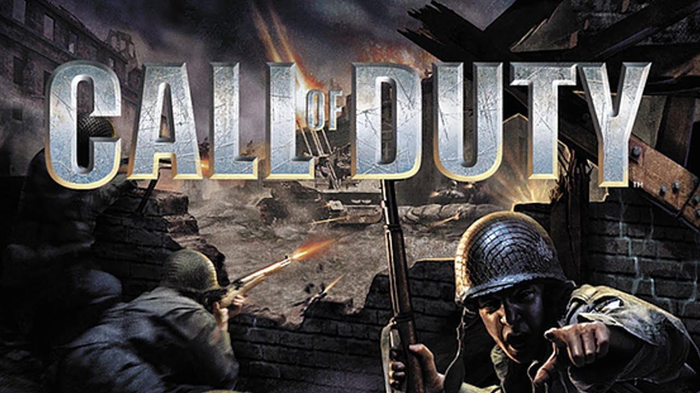
O primeiro jogo da série. Focado na Segunda Guerra Mundial, mostra campanhas dos exércitos americano, britânico e soviético.
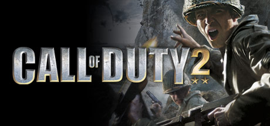
Expande a fórmula do original com gráficos melhores e batalhas mais intensas na Segunda Guerra Mundial.
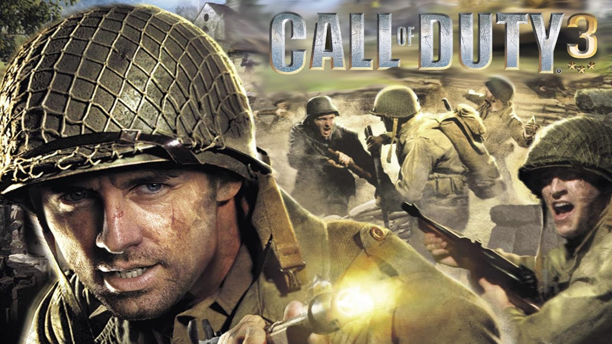
Continua na Segunda Guerra Mundial, acompanhando tropas aliadas durante a libertação da França.
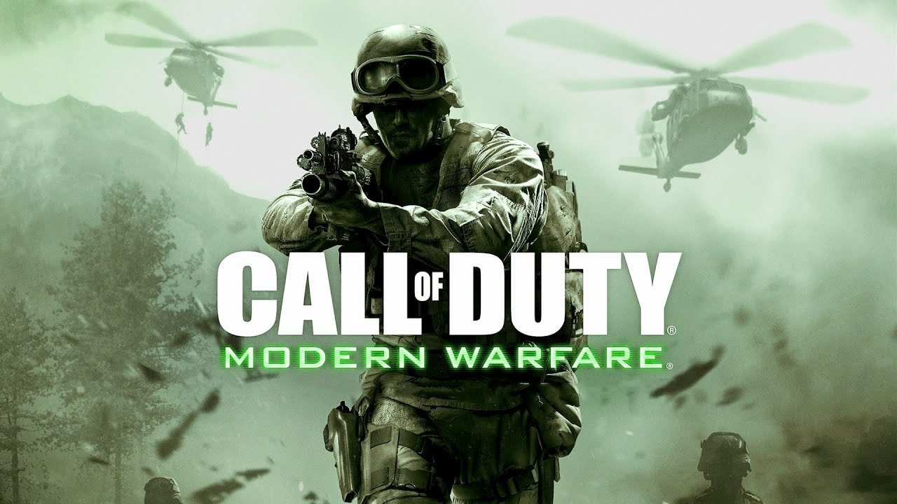
Revolucionou a franquia ao abandonar a Segunda Guerra e trazer conflitos modernos. Introduziu personagens icônicos como Captain Price.
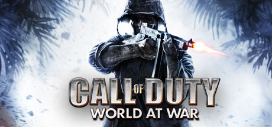
Retorna à Segunda Guerra Mundial com um tom mais sombrio. Marca a estreia de Viktor Reznov e do modo Zombies.
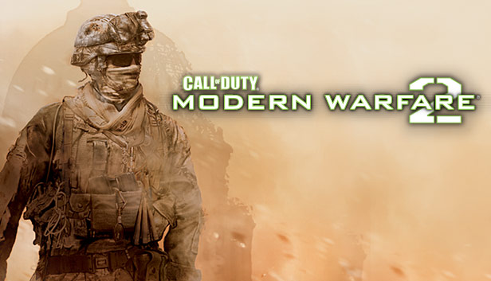
Continua a história de Modern Warfare com operações globais e algumas das missões mais famosas da franquia.
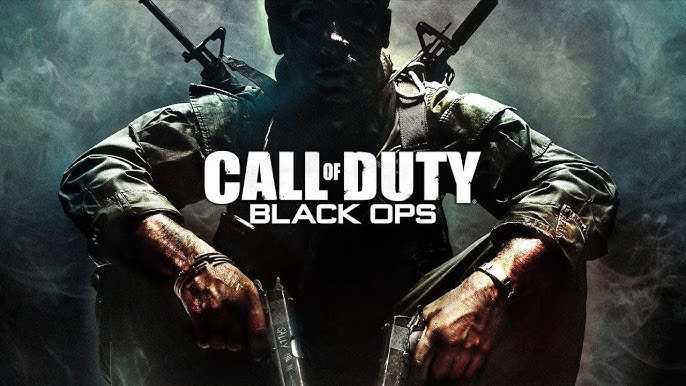
Ambientado durante a Guerra Fria. Acompanha Alex Mason em uma trama cheia de conspirações e lavagem cerebral.
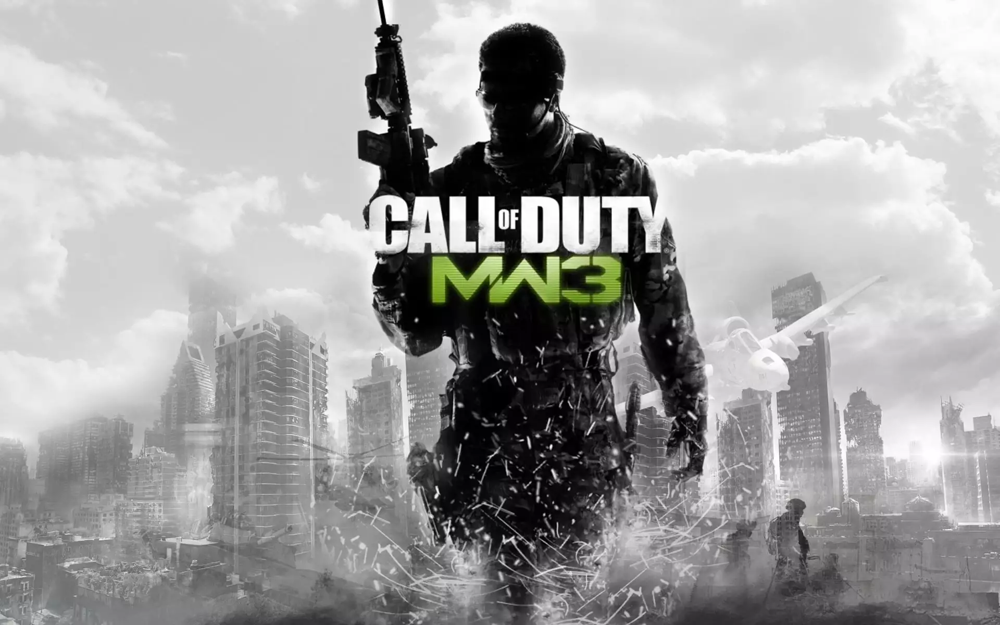
Conclusão da trilogia original Modern Warfare, encerrando a guerra contra Vladimir Makarov.

Mistura missões nos anos 1980 e no futuro de 2025. Introduz o vilão Raul Menendez.
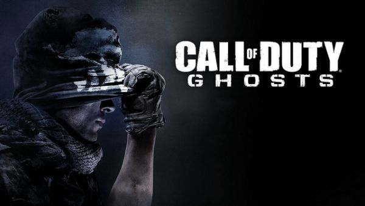
Nova história independente. Os Estados Unidos enfrentam uma poderosa federação sul-americana após um ataque devastador.
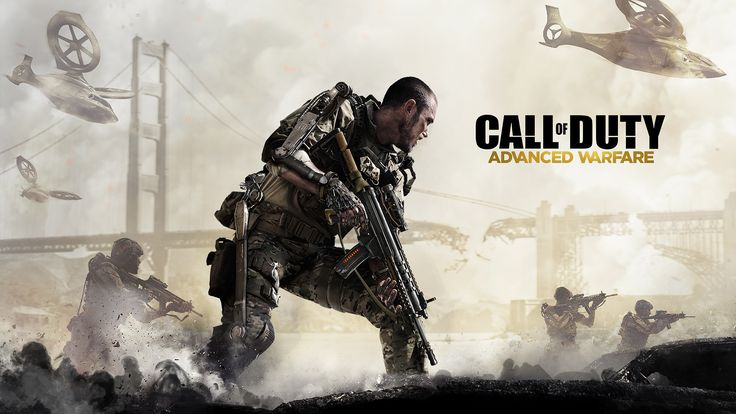
Ambientado em 2054. Introduz exoesqueletos, mobilidade avançada e corporações militares privadas.
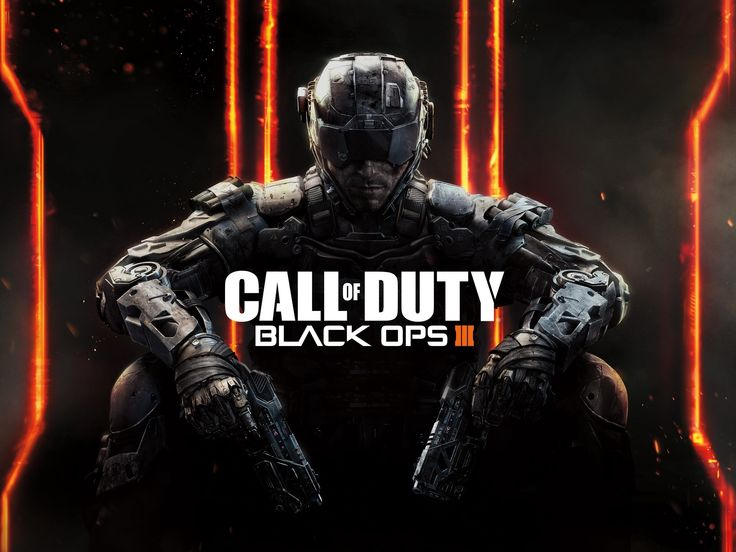
Leva a série para um futuro cyberpunk, com soldados aprimorados tecnologicamente e IA avançada.
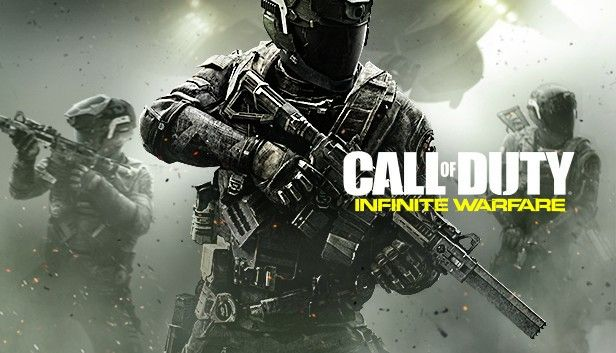
Conflito espacial entre a Terra e colônias fora do planeta. Foi a aposta mais futurista da franquia.
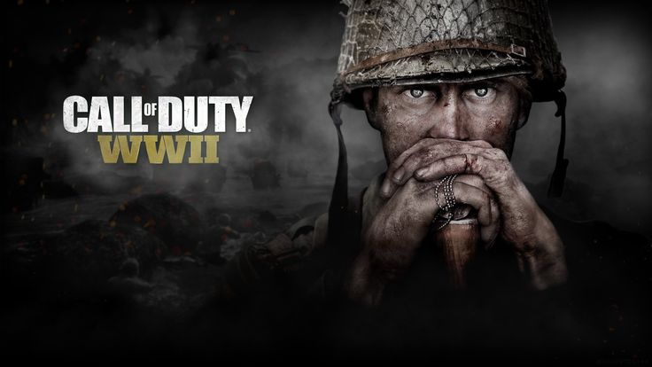
Retorno às origens da Segunda Guerra Mundial, focando na campanha europeia.
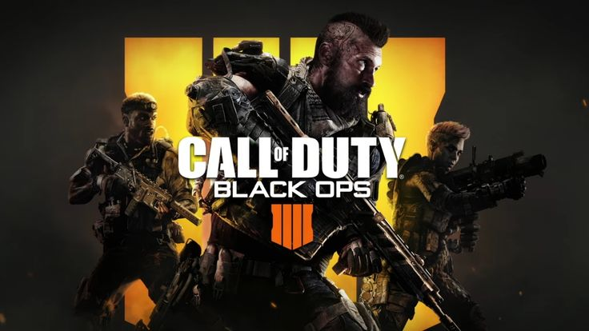
Primeiro jogo principal sem campanha tradicional. Focado em multiplayer, Zombies e o modo battle royale Blackout
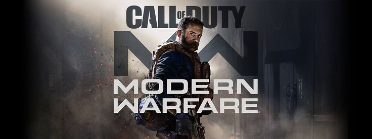
Reboot da saga Modern Warfare. Reimagina personagens clássicos para uma nova linha do tempo.
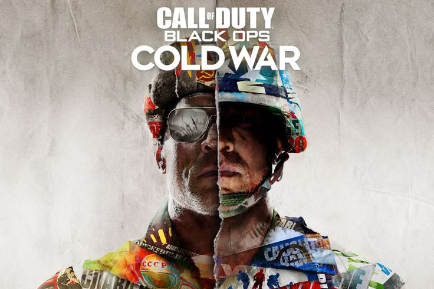
Sequência direta de Black Ops, ambientada nos anos 1980 durante a Guerra Fria.
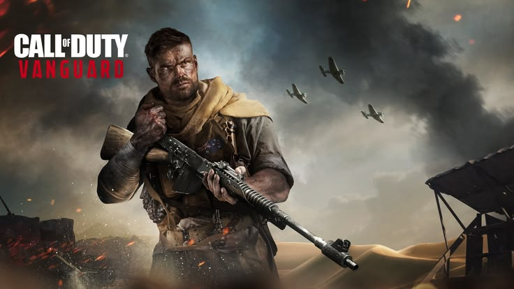
Volta à Segunda Guerra Mundial mostrando forças especiais de diferentes países.
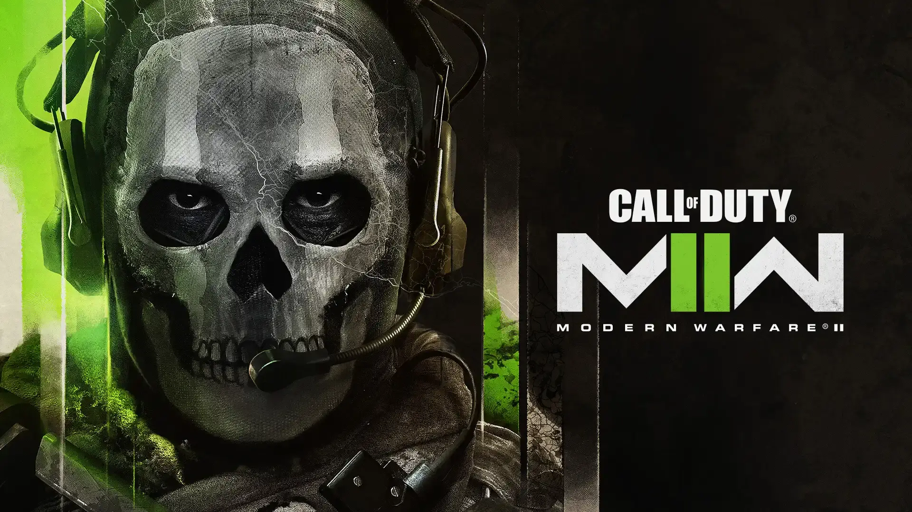
Continuação do reboot de 2019. Reúne novamente a força-tarefa Task Force 141.
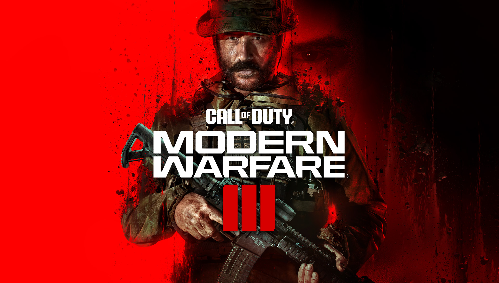
Continua os eventos de MWII e traz o retorno de Makarov na nova cronologia.

Ambientado durante a década de 1990 após a Guerra do Golfo. Mistura espionagem, conspirações e o tradicional modo Zombies.
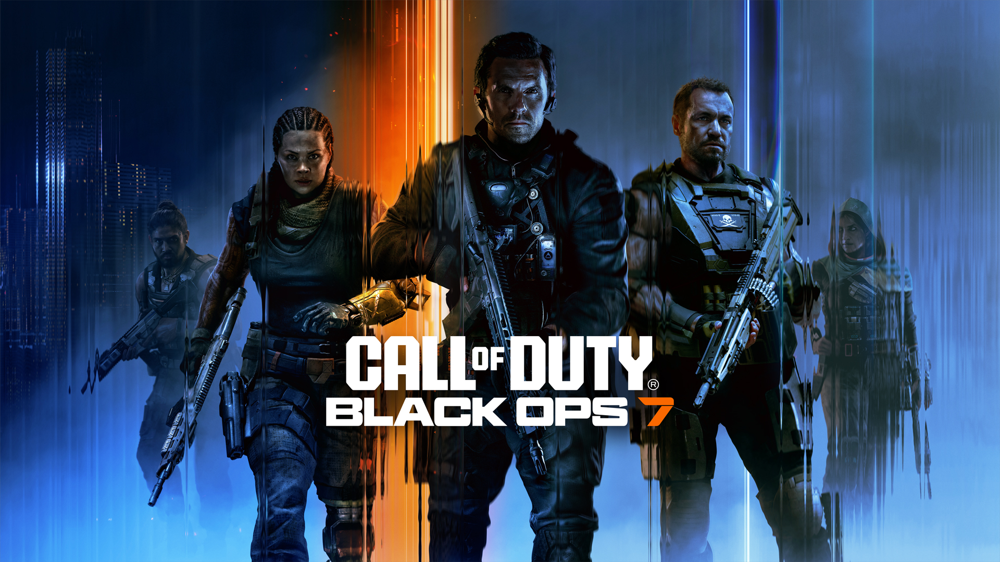
Sequência direta de Black Ops 6, ambientada em 2035. Traz o retorno de David Mason e Raul Menendez.